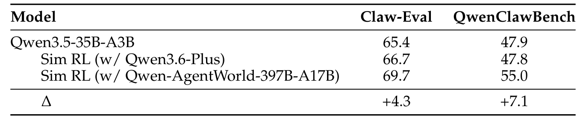
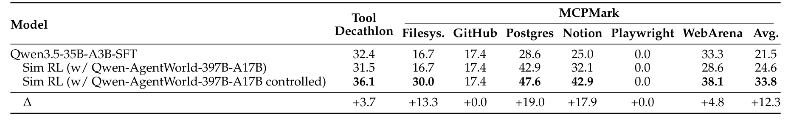
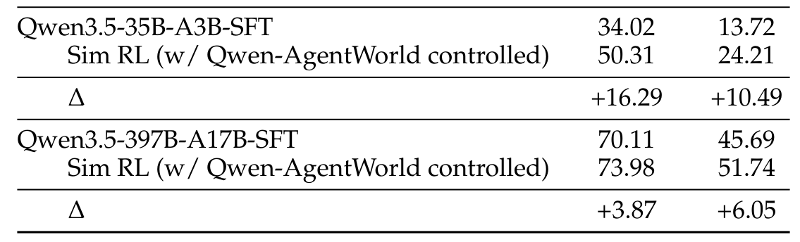
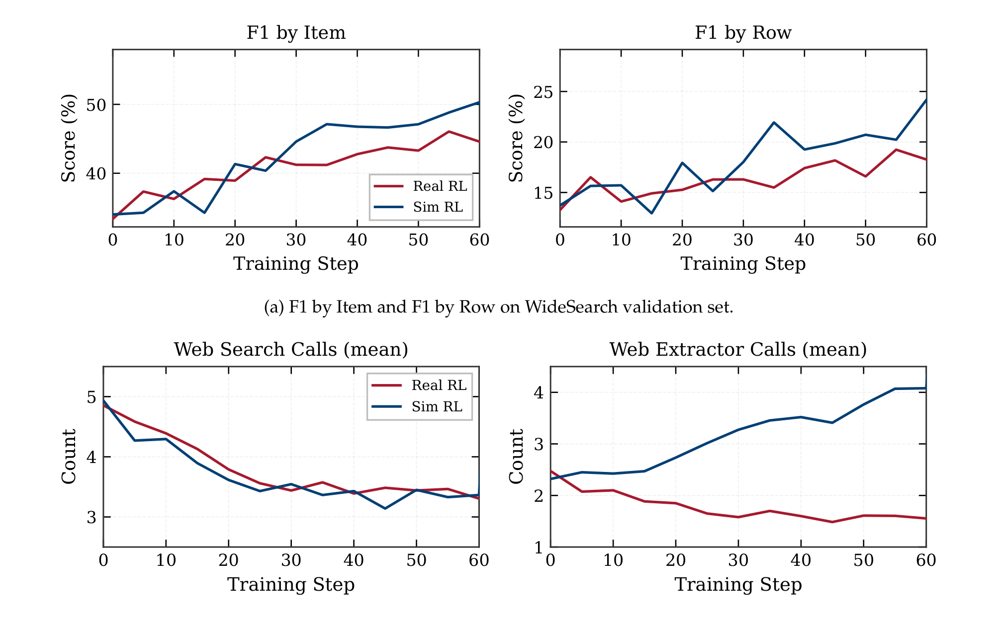

Qwen-AgentWorld
应用一：把世界模型用作环境模拟器
学习零样本环境扩展、可控模拟、虚构世界构建，以及 Sim RL 与 Real RL 的取舍。
世界模型作为环境模拟器
在这个应用中，Qwen-AgentWorld 作为独立的环境模拟器：策略智能体与世界模型是两套模型。模拟器提供两个真实环境难以直接提供的属性：可扩展性和可控性。
Source: Qwen-AgentWorld, §6.1
零样本环境扩展
Qwen-AgentWorld 可以在无需领域特定适配的情况下，泛化地模拟大量现实、高度专业化的真实世界环境。

可控模拟
可控模拟使用自然语言指令在轨迹级别和 turn 级别塑造 Qwen-AgentWorld 的行为。
环境适配（Environment Adaptation）
真实部署往往不够"极端"，可控模拟可以主动制造训练压力。
环境适配：通过指令调整模拟器的行为与风格，注入针对性扰动，从而系统性地暴露智能体弱点。控制指令修改模拟风格与内容，产生比真实部署更极端或更有针对性的条件。
Source: Qwen-AgentWorld, §6.1.2

虚构世界构建
虚构世界构建（Fictional-World Construction）
防止智能体用参数记忆或真实世界知识绕过模拟环境。
虚构世界构建：模拟器生成一个结构上真实、事实上与真实世界完全脱节的虚构环境。以 Search 为例，Qwen-AgentWorld 从一个紧凑的初始设定出发，模拟出完全虚构、自洽的世界。这带来两个结构性优势：
- 智能体无法绕过搜索工具，用参数记忆直接作答。
- 智能体不会把训练时的搜索结果与真实世界知识混淆。
Source: Qwen-AgentWorld, §6.1.2

Sim RL vs. Real RL

什么时候用解耦模拟器，什么时候用真实环境？
视角
依据：基于保真度、成本、可扩展性与安全性的权衡。
使用解耦模拟器（Sim RL）当：
- 需要扩展到数千个并行环境，而真实基础设施无法支撑。
- 想注入针对性扰动或构建虚构世界做对抗训练。
- 真实环境访问昂贵、缓慢或不可行（不可逆操作、专有部署）。
使用真实环境（Real RL）当：
- 需要高保真度，用于安全关键或高风险领域。
- 环境简单快速，扩展不是瓶颈。
- 处于最终验证阶段，需要确认 sim-to-real 迁移。
重要提醒：Sim RL 的效果依赖于给世界模型提供足够详细的初始状态；否则模拟保真度下降，下游收益也会衰减。
Source: Qwen-AgentWorld, §6.1
练习：设计一个可控模拟
任务：为 Terminal 领域的训练场景设计一条可控模拟指令。
场景：你想训练一个智能体，在包安装过程中优雅地处理磁盘空间不足错误。
要求：
- 写出指定初始状态（操作系统、磁盘空间、已安装包）的模拟指令。
- 指定可控扰动：模拟器应在 pip install 的下载阶段正常完成后，再模拟 "no space left on device" 错误。
- 指定期望的智能体行为：检测到错误、清理 pip 缓存、并用
--no-cache-dir重试。
验证标准：模拟指令必须让预期的响应边界足够明确，以减少训练中的幻觉；初始状态必须足够详细，以约束期望观察。
完整答案应包含：
- 初始状态：Ubuntu 22.04，Python 3.10，pip 23.x，2 GB 可用磁盘，/workspace 已挂载，pandas 未安装。
- 扰动触发：pip download 完成后、wheel unpack 前，抛出
OSError: [Errno 28] No space left on device。 - 期望行为：捕获错误，执行
pip cache purge，然后执行pip install --no-cache-dir pandas。
Source: Qwen-AgentWorld, §6.1.2, Figure 3
---
模块小结：作为解耦模拟器，Qwen-AgentWorld 支持零样本环境扩展、带针对性扰动的可控模拟，以及虚构世界构建。在 WideSearch 上，可控 Sim RL 可以超过 Real RL（50.3% vs. 45.6% F1）。初始状态的详细程度是模拟保真度的关键瓶颈。